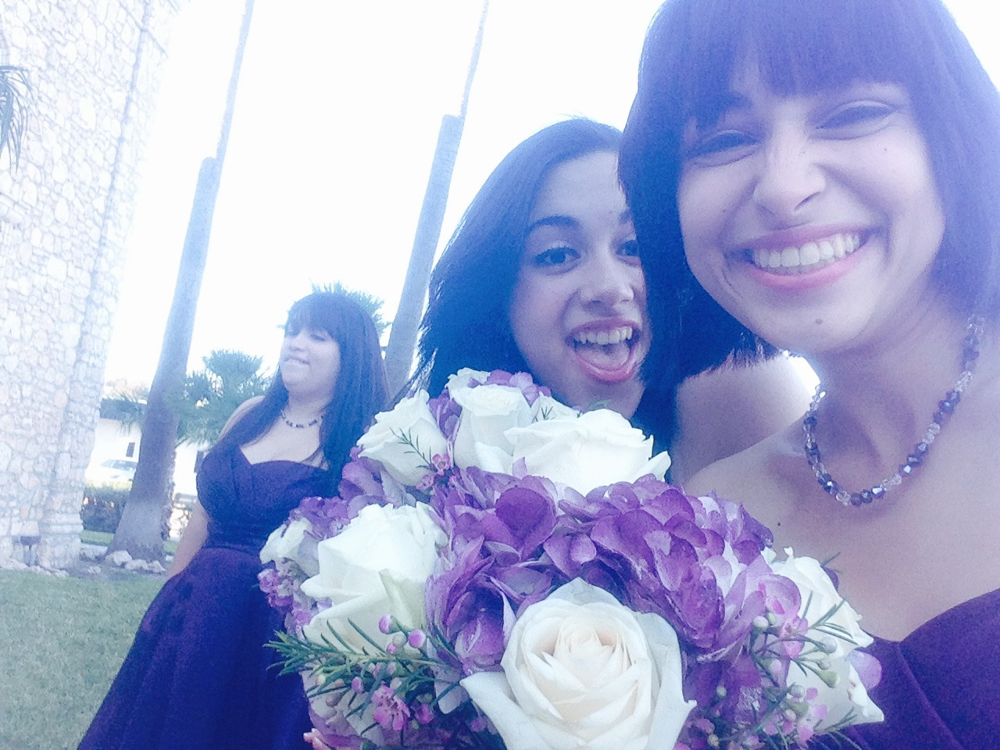
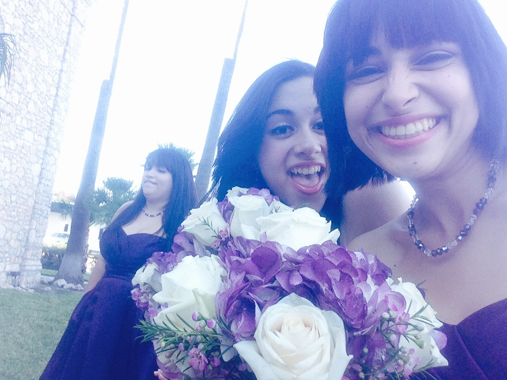

I am a guacamole specialist, an MIS major, and an animal lover.
I have three crazy sisters and two crazier parents.
Back home my family owns three dogs, three cows, two cats, two horses, and a rabbit named Bunny.
Here in Austin I foster two full grown cats, Yeti and Jupiter.
I like to take long naps, solve puzzles, write in piglatin, and talk to my pets.
My cats say I'm clingy but I disagree. Cats can be SO illsay!
 
